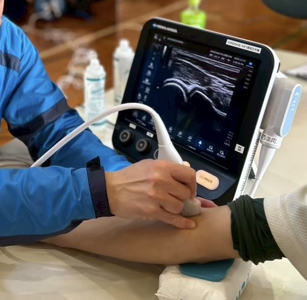
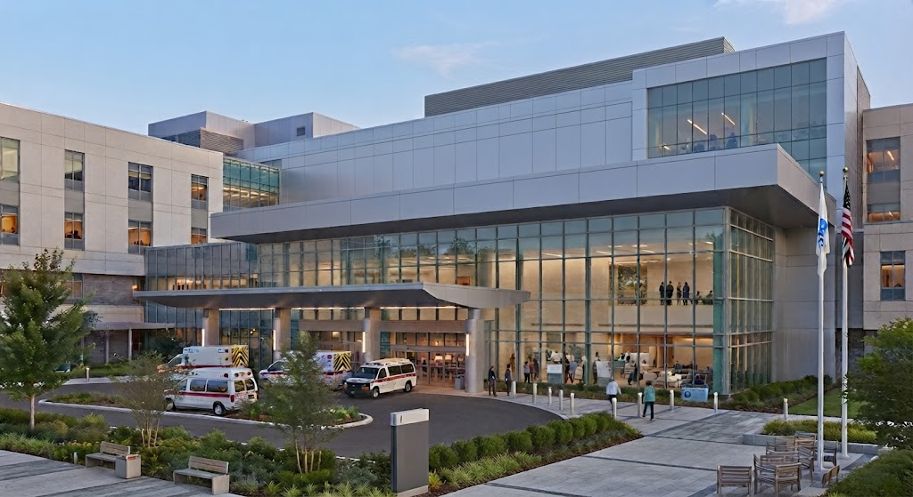
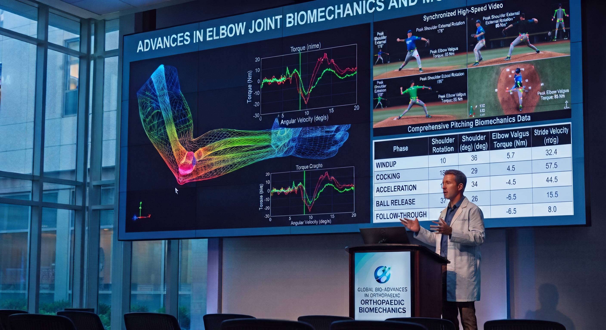
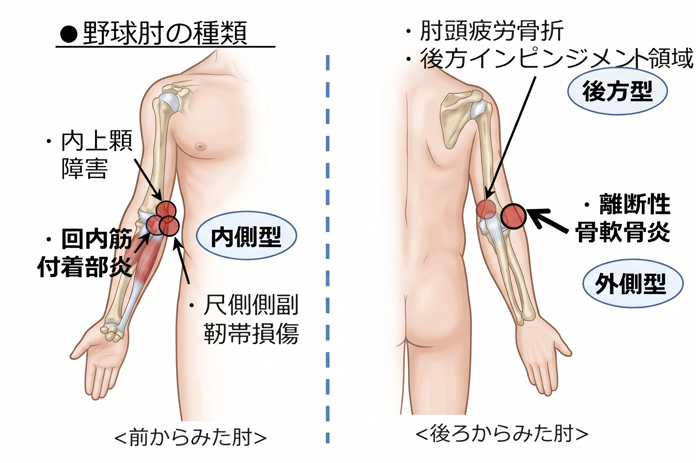

01 / CHECK
メディカルチェック
身体の状態を確認し、スポーツ障害の兆候を早期に把握することを目指します。
兵庫野球・スポーツ障害予防ネットワークは、年に数回のメディカルチェックを実施し、アマチュアアスリートのスポーツ障害の予防と早期発見に取り組んでいます。
兵庫野球・スポーツ障害予防ネットワークは、野球をはじめとするアマチュアアスリートが、健康に長く競技を続けられる環境づくりを目指して活動しています。
定期的なメディカルチェックを通じてスポーツ障害の兆候を早期に発見し、選手・保護者・指導者への情報提供と障害予防の啓発に取り組んでいます。
年に数回、アマチュアアスリートを対象としたメディカルチェックを実施しています。

身体の状態を確認し、スポーツ障害の兆候を早期に把握することを目指します。

メディカルチェックで得られた情報をもとに、必要に応じて適切な医療機関へつなぎ、継続的な診療や治療を支援します。

メディカルチェックなどで得られたデータを適切な同意や倫理的手続きのもとで活用し、スポーツ障害の予防・早期発見につながる新たな知見の創出を目指します。
※ 検査項目や対象者は開催回ごとに異なる場合があります。
次回メディカルチェックの開催予定についてご案内します。
募集開始後にご案内します。
※ 開催情報は予定です。変更がある場合は当サイトでご案内します。
オンライン申込フォームは準備中です。募集開始後、こちらに申込ボタンを表示します。
スポーツ障害の予防には、身体からのサインを見逃さず、早期に適切な対応を取ることが重要です。
野球肘とは、投球動作に伴って肘に生じる障害の総称です。障害が生じる部位によって、内側型・外側型・後方型に分類されます。

野球肘には、成長期の骨や軟骨の特性に加え、投球数・練習時間、投球フォーム、肩や全身の関節可動域、筋力、コンディションなど、さまざまな要因が関係します。
投球数や練習時間を適切に管理し、肩のストレッチや全身のコンディショニングを行うことが、障害予防に向けた重要な取り組みです。
離断性骨軟骨炎（OCD）は、肘の外側に生じる骨軟骨の障害です。初期には痛みがない場合もありますが、早期発見により保存療法を選択できる可能性が高まります。放射線被ばくのない超音波検査（エコー）は、早期発見に役立ちます。
※ 本ページは一般的な情報提供を目的としており、診断や治療に代わるものではありません。
検診参加に関する同意書、写真や検診データの利用、研究利用に関する案内は、内容確定後に掲載します。
研究利用に伴うオプトアウトについては、対象となる研究の内容や適用される指針に応じてご案内します。
検診への参加や団体の活動に関するお問い合わせについてご案内します。
兵庫野球・スポーツ障害予防ネットワークでは、検診の参加申込とお問い合わせのため、必要な個人情報を取得します。
参加選手の氏名、学年、所属チーム、連絡担当者の氏名、メールアドレス、電話番号などを、参加受付、開催案内、当日の受付管理のために利用します。お問い合わせで取得する情報は、問い合わせ対応のために使用します。
申込フォームでは検診結果や病歴は収集しません。
検診参加申込で取得した個人情報は、原則として検診終了後6か月間保存し、その後適切な方法で削除します。2027年3月7日の検診については、2027年9月7日を削除期限とします。
個人情報はGoogleフォームおよびGoogleスプレッドシートを利用し、団体の管理担当者のみがアクセスできる設定で管理します。保存期間終了後は管理者が手動で削除します。
取得した個人情報は、法令に基づく場合などを除き、本人の同意なく外部団体や第三者に提供しません。
個人情報の開示・訂正・削除等をご希望の場合は、下記窓口までご連絡ください。本人確認を行ったうえで、法令に従い適切に対応します。
兵庫野球・スポーツ障害予防ネットワーク
bsip.hyogo@gmail.com